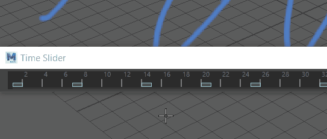

Blue Pencil 图形在时间滑块上显示为帧，您可以重新排列它们。
- 有关在时间滑块上显示或隐藏 Blue Pencil 帧的信息，请参见时间滑块首选项中的 Blue Pencil 选项
- 有关导入或导出 Blue Pencil 帧的信息，请参见导入或导出 Blue Pencil 帧。
- 添加 Blue Pencil 帧
- 打开 Blue Pencil 工具，然后在视口中开始绘制：Blue Pencil 帧会自动显示在时间滑块当前时间指示器的位置。此帧被视为活动 Blue Pencil 帧。
- 也可以在 Blue Pencil 工具栏中单击“添加帧”(Add Frame)
 ，或在时间滑块上单击鼠标右键，然后从“动画控件”(Animation Controls)菜单中选择。
，或在时间滑块上单击鼠标右键，然后从“动画控件”(Animation Controls)菜单中选择。
- 剪切、复制、粘贴、清除或删除 Blue Pencil 帧
- 使用 Blue Pencil 帧执行这些基本任务的方法有很多：
- 使用 Blue Pencil 工具栏或 Blue Pencil 工具设置上的 （剪切）、（复制）、（粘贴）、
 （清除）或 （删除）按钮
（清除）或 （删除）按钮
- 从 Blue Pencil 标记菜单中选择“帧”(Frame) >
- 在时间滑块上单击鼠标右键，然后从“动画控件”(Animation Controls)菜单的 Blue Pencil 卷展栏中选择一个选项
- 使用 Blue Pencil 工具栏或 Blue Pencil 工具设置上的 （剪切）、（复制）、（粘贴）、
- 有关移除帧或其内容的详细信息，请参见清理 Blue Pencil 草图，请参见下文中的“复制帧”(Copy Frame(s))和“复制上一帧”(Duplicate Previous Frame)之间的区别。
-
- “复制帧”(Copy Frame(s))和“复制上一帧”(Duplicate Previous Frame)之间的区别
- Blue Pencil 工具栏上的“复制帧”(Copy Frame(s)) () 和“复制上一帧”(Duplicate Previous Frame) () 功能可能听起来很相似，但它们会产生不同的效果：
-
- “复制帧”(Copy Frame(s))可用于将帧复制到剪贴板，然后将其粘贴到时间滑块上的任意位置（前提是那里还没有帧）。
- “复制上一帧”(Duplicate Previous Frame)会在当前时间创建上一帧的相同版本（前提是那里还没有帧）。如果希望一个图像在整个场景中持续存在或重复，请使用“复制帧”(Duplicate Frame)。
- 通过沿时间滑块复制和变换草图，可以使用“复制上一帧”(Duplicate Previous Frame)快速创建动画序列。在以下示例中，复制了一只鸟的草图并变换了几帧，以创造飞行的错觉。请参见使用 Blue Pencil 变换模式修改图形。

- 移动 Blue Pencil 帧
- 按住 Shift 键并单击以在时间滑块上高亮显示一个或多个帧。高亮显示后，将选定区域拖动到新位置。可以按住 Shift 键并拖动多个帧。
-

- 您还可以使用“重定时帧”(Retime frame)工具以增量方式移动帧。
- 缩放 Blue Pencil 帧
- 按住 Shift 键并单击以在时间滑块上高亮显示一个或多个帧。高亮显示后，拖动高亮显示区域任意一端的箭头以增大或缩小帧之间的计时。
- 重定时 Blue Pencil 帧
- 单击 Blue Pencil 工具栏上的“向前重定时”(Retime Forward) (
 ) 和“向后重定时”(Retime Backward) (
) 和“向后重定时”(Retime Backward) ( ) 按钮，将 Blue Pencil 帧沿时间滑块从选定帧向前或向后偏移。在“帧范围”(Frame Range)字段中设置要移动帧的帧数。
) 按钮，将 Blue Pencil 帧沿时间滑块从选定帧向前或向后偏移。在“帧范围”(Frame Range)字段中设置要移动帧的帧数。
-

- 保存和导出 Blue Pencil 帧
- 使用 Blue Pencil 工具栏上的“导出 Blue Pencil 帧”(Export Blue Pencil Frames) (
 ) 按钮，可以保存场景中的所有 Blue Pencil 草图。请参见导入或导出 Blue Pencil 帧。
) 按钮，可以保存场景中的所有 Blue Pencil 草图。请参见导入或导出 Blue Pencil 帧。
- 导入旧版油性铅笔帧
- 可以将旧版油性铅笔帧导入到 Blue Pencil 中。请参见导入或导出 Blue Pencil 帧中的将油性铅笔帧导入 Blue Pencil 部分。
- 播放预览 Blue Pencil 图像序列
- 绘制一系列 Blue Pencil 草图后，可以播放预览它们并创建 2D 动画的快速影片。
注： 如果不希望 Blue Pencil 草图显示在播放预览中，请在“面板 > 显示”(Panel > Show)菜单的“播放预览”(Playblast)部分中将其禁用。请参见下面的显示或隐藏 Blue Pencil 图像。
播放预览 Blue Pencil 草图
- 确保 HUD 在“面板 > 显示”(Panel > Show)菜单中处于活动状态。
- 选择，或参见播放预览动画以了解详细信息。
（如果未选中 HUD 选项，则 Blue Pencil 图形不会显示在视口中。）
- 显示或隐藏 Blue Pencil 图像
- 可以在视口中隐藏/取消隐藏 Blue Pencil 图形。
- 在“面板 > 显示”(Panel > Show)菜单中，选择 Blue Pencil 以显示 Blue Pencil 图像。默认设置为“启用”。
- 若要在播放预览中隐藏图形，请选择“面板 > 显示 > 播放预览”(Panel > Show > Playblast)，然后选择 Blue Pencil。